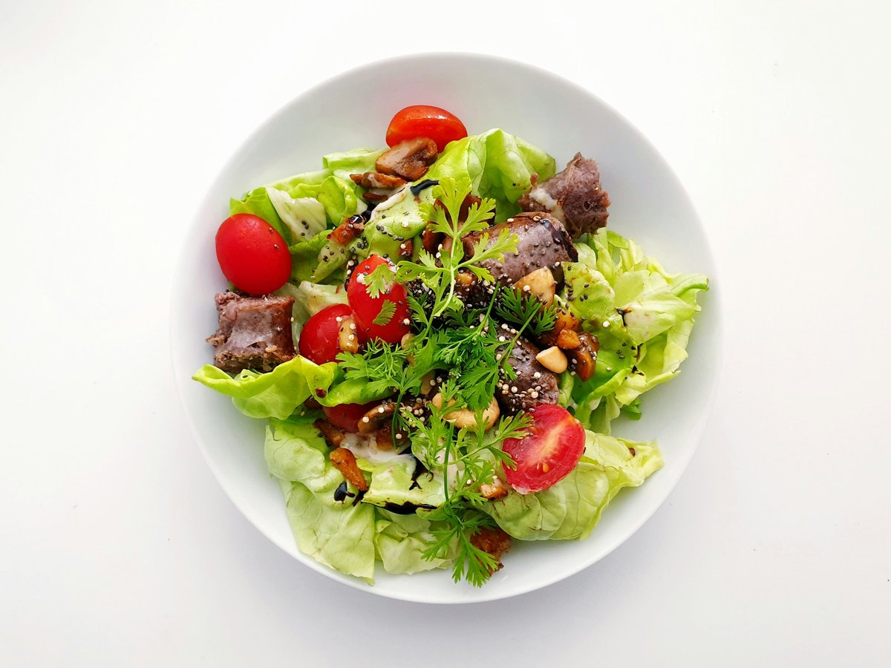

← Toutes les recettes
Sauce César
La vraie sauce César, onctueuse et bien relevée, parfaite pour une salade ou comme dip.

Ingrédients
- Jaune d'oeuf1
- Filets d'anchois à l'huile4
- Gousse d'ail1
- Moutarde de Dijon1 c. à café
- Jus de citron2 c. à soupe
- Sauce Worcestershire1 c. à café
- Huile d'olive120 ml
- Parmesan râpé finement40 g
- Poivre noir fraîchement moulu1/2 c. à café
- Sel1 pincée
Étapes
- Écraser l'ail et les anchois en fine pâte à l'aide d'un couteau ou d'un mortier. Dans un bol, fouetter ensemble le jaune d'oeuf, la moutarde, le jus de citron et la sauce Worcestershire, puis incorporer la pâte anchois-ail.
- Verser l'huile d'olive en filet très fin tout en fouettant constamment pour créer une émulsion lisse et onctueuse. Commencer goutte à goutte pour bien amorcer l'émulsion.
- Incorporer le parmesan et assaisonner avec le poivre et le sel. Ajuster l'acidité avec un peu plus de citron si nécessaire. Réserver au frais jusqu'au service.
Pour une sauce plus fluide, ajouter 1 à 2 c. à soupe d'eau froide et fouetter. Sans anchois, remplacer par 1 c. à café de pâte de miso blanche + quelques câpres. Se garde 3 jours au réfrigérateur dans un bocal fermé. Pour une version rapide, partir d'une base de mayonnaise du commerce.